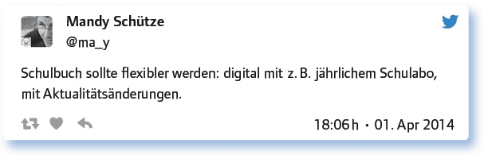
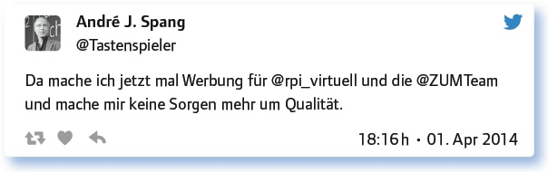

von Torsten Larbig
In der Woche nach dem Ende der Didacta 2014 in Stuttgart wurde in diesem #EDchatDE die Frage nach der Zukunft des Schulbuchs gestellt, der Zukunft jenes Mediums des Lernens, das mit dem Etikett Bildung einen hohen Wert zugeordnet bekommt, im Kern aber vor allem ein großer Wirtschaftszweig ist. Hinzu kommt der Klassiker: Es gibt womöglich keine fehlerfreien Schulbücher – und wenn diese als PDF digitalisiert werden, dürfen sie aufgrund bisheriger Zulassungsverfahren in den Bundesländern nicht verändert und somit auch nicht korrigiert werden!
Nun also versuchen unterschiedliche Verlage geschlossene, ihnen das Copyright durch technische Einschränkungen bei der Nutzbarkeit sichernde System zu entwickeln, die das Schulbuch begleiten sollen. Damit stellt man sich der Realität: Wer heute das Schulbuch etwa durch Bildungsmedien für Smartphones und Tablets ersetzen wollte; wer heute auf Bring- Your-Own-Device-Modelle setzen würde, hätte z. B. in Bayern massive Vermarktungsprobleme, weil dort schülereigene Geräte auf dem Schulgelände gesetzlich verboten sind und abgeschaltet sein müssen.
Hat das Schulbuch Zukunft? Und verbaut dessen Zukunft die Zukunftschancen eines ganzen Landes, das in den digitalen Märkten einfach nicht Fuß fassen kann? Liegt das Scheitern so vieler deutscher StartUPs auch daran, dass die Bildungslandschaft auf analoge Medien hin ausgerichtet ist?
Im Zeitalter von YouTube, Wikipedia und Co. ist das Schulbuch am Ende, oder wie siehst du das?

Ob Schulbuch oder andere Formen von Medien, die ja zweifellos bereits in den Schulen eingesetzt werden: Es geht immer um die Frage, wie das Lernen gelingt und ob Lernmaterial Lehrkräfte bei der Begleitung von Lernprozessen unterstützt. Stellen wir uns also dieser Frage:
Hilft dir das Schulbuch bei deinem Unterricht oder erstellst, kopierst, „downloadest“ du eine Fülle von Zusatzmaterialien?
Ich versuche, eigenes Material zu erstellen. In der Ausbildung ist das nötig.
Es hilft als Text- und Aufgabensammlung. Ich downloade trotzdem viel, v. a. aktuelles: http://t.co/TUJyWUI7zz
Das hängt vom Fach ab. Ich unterrichte SEK 1 Deutsch erheblich losgelöster vom Schulbuch als Französisch.
Die Lernenden finden das Schulbuch sehr ernüchternd. Allerdings wollen einige auch „nicht nur am Bildschirm sitzen“.
Schulbücher geben Struktur, Lehrplankonformität, Anregungen für Fragestellungen.
Für die Differenzierung/Inklusion muss ich geeignetes Material kopieren/erstellen. Ein Buch passt nicht für alle.
„Ein Buch passt nicht für alle“ fasst hier gut die Herausforderung zusammen, vor denen Lehrende aller Fächer stehen: Schulbücher richten sich an einen Durchschnittsschüler, erlauben die eine oder andere Differenzierung, bilden aber kaum die Realität von Heterogenität ab, die wir in Schulklassen heute vorfinden. Das Problem wird sich wohl kaum mit Büchern alleine lösen lassen. – Oft wird in diesem Zusammenhang die Frage der Qualität unterschiedlicher Lernmaterialien gestellt:
Verlage betonen oft die hohe Qualität von Schulbüchern. Wie sind deine Erfahrungen mit Qualität im Vergleich zu freiem Material (OER)?

Die oben genannten Websites sind unter rpi-virtuell.net und zum.de zu erreichen.
Zwischendurch ist bei solch ernsten Themen immer mal wieder Entspannung angesagt. Und angesichts der folgenden Frage sei hier noch einmal darauf hingewiesen, dass die vollständigen Protokolle der #EDchatDE-Ausgaben im Wiki des #EDchatDE nachlesbar sind …
Suche ein Bild (oder Musik/Video) zum heutigen Thema des #EDchatDE und/oder zum 1. April!
Das Schulbuch der Zukunft: http://t.co/RfeHOKWYVM – http://t.co/Ma8t6x4HQF
Ein (Ex-)Schüler von mir über das Schulbuch. Vor 2 Jahren als Gastbeitrag auf herrlar-big.de: http://t.co/7tTsib1YjC
Heute entdeckt! Zum Thema: „Wie sieht das (digitale) Schulbuch der Zukunft aus?“: https://t.co/dJk1RzWemL
Und, war was Spannendes dabei? – Jetzt schauen wir ein wenig in die Zukunft und laden dazu ein, sich einmal vorzustellen, was zu tun ist, wenn man sich denn dafür entscheiden sollte, die Möglichkeiten der Digitalisierung ernst zu nehmen:
Welche Voraussetzungen müssen geschaffen werden, um eBooks flächendeckend einzusetzen und wo wird es haken?
Auf die Gefahr, mich zu wiederholen: Die Infrastruktur (Lesegeräte wie Tablets) muss stimmen und vorhanden sein!
BibliothekarInnen, die eBooks konvertieren können. Gute Reader-Apps und Rechte, die flexibel genug sind.
Technik nicht mehr verbieten, sondern vernünftig einbinden.
Es scheitert an der Technik, sie ist meist plattformabhängig und nicht mit allen Systemen kompatibel.
Nur „Schulbuch versus digital“ greift zu kurz. Wir brauchen auch handlungsorientierten (Projekt-)Unterricht, reales Erleben.
Wir wollten 2014 gar nicht sonderlich weit in die Zukunft schauen, sodass jetzt schon überprüft werden kann, welche Prognosefähigkeiten Lehrpersonen denn nun haben …
Vision 2017: Mit welchen Bildungsmedien unterrichten wir dann? Welche Wünsche stellst du an diese „Schulbücher“?
Sie sollen abwechslungsreich und interaktiv sein. Arbeitsblätterbenutzung soll frei sein.
Digital, interaktiv, aktualisierbar, bearbeitbar, plattformunabhängig.
Wenn es in der 5. Klasse um Biohöfe geht, will ich den Kuhmist riechen!!!
Ich könnte mir ein Lehrwerk-Grundangebot (digital) vorstellen, zu dem ich modulartig zusätzliche Materialien ergänzen kann.
Mit einem deutschsprachigen Learnify: Sammlung von OER von Lehrpersonen für Lehrpersonen und SuS: http://t.co/5oLlNjHOjx
Ich bin da skeptisch. Prognose: Bis 2017 tut sich nix Erwähnenswertes.
Fazit:
Schaut man in die Schulen, so lebt das Schulbuch, obwohl es mehr und mehr Lehrpersonen gibt, die sich „was anderes“ wünschen, obwohl viele Schüler längst intensiv mit „Lernvideos“ arbeiten und sich sonstiger Quellen bedienen, um beim Lernen erfolgreich sein zu können. Und hier lohnt sich das Nachdenken darüber, wie Medien im Unterricht so eingesetzt werden, dass die Schüler mit deren Hilfe wirklich lernen können. Wie vermitteln wir den sinnvollen Umgang mit den unterschiedlichen Medien? Und wo brauche ich als Lehrperson vielleicht selbst noch Fortbildungen im Umgang mit (digitalen) Medien, um in der Lage zu sein, den Erwerb der Fähigkeit mit unterschiedlichen Medien zu lernen zu unterstützen?
Links zum Thema:
Ein umfassender Artikel zur Einführung in das Thema von Werner Wiater: Das Schulbuch als Gegenstand pädagogischer Forschung (PDF): http://opus.bibliothek.uni-augsburg.de/opus4/frontdoor/deliver/index/docId/5/file/Wiater_Schulbuch.pdf
Werner Hartmann: M-Book – die Zukunft des Schulbuches? (PDF): http://www.kibs.ch/wiki/images/8/83/Artikel_M-Book.pdf
Erich Herber & Christian Nosko. Todgesagte leben länger – Das Schulbuch der Zukunft. (PDF): www.donau-uni.ac.at/imperia/md/content/department/imb/forschung/publikationen/herber__nosko_-_das_schulbuch_der_zukunft.pdf
Ein Artikel von mediendidaktik.org: Das Schulbuch der Zukunft ist ein Schulbuch der Schüler: http://www.mediendidaktik.org/2011/11/13/das-schulbuch-der-zukunft-ist-einschulbuch-der-schuler/
Mehr als in der deutschsprachigen Debatte ist die Frage nach der Rolle Schulbücher in der Schule im angelsächsischen Raum viel stärker eine Diskussion um die Rolle von Schule in der Zukunft, um die Zukunft der Schule. Hier also auch noch ein paar Links aus dieser Diskussion.
No More Pencils, No More Books: A School of the Future Readies for Launch: www.edutopia.org/voise-academy
Be Our Guest: E-textbooks are the educational tool of the future, but preparation to implement them must start now: www.nydailynews.com/new-york/education/guest-e-textbooks-devices-networks-succeed-article-1.1456763
In a Digital Future, Textbooks Are History: www.nytimes.com/2009/08/09/education/09textbook.html?pagewanted=all&_r=1
Future of school textbooks written in cyberspace: http://phys.org/news/2009-01-future-school-textbooks-written-cyberspace.html
NY school goes all-in on digital textbooks: www.nbcnews.com/business/business-news/ny-school-goes-all-digital-textbooks-f2D11792419
Link zum vollständigen Protokoll: